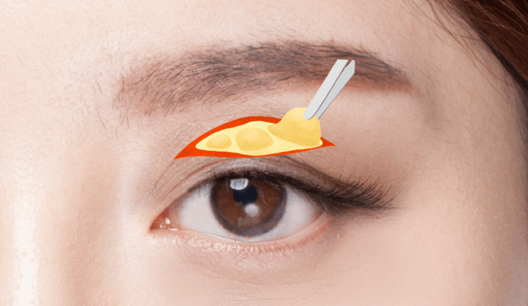
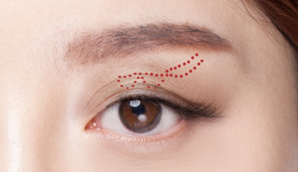
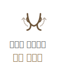

처진눈꺼풀을
생기 있게 UP!
#상안검
성형
-

수술 시간
1시간
-

마취방법
수면/국소마취
-

실밥제거
4~5일후
-

내원치료
1~2회
-

회복기간
7일 이내
상안검 성형이란?
상안검성형은 눈꺼풀의 처진 피부를
제거함과 동시에 눈꺼풀 속의 늘어진
눈뜨는 근육도 당겨줌으로써 처진
눈꺼풀의 근본적인 원인을 해결해
동안 눈매를 만들어줍니다.
눈의 모양, 기능을 고려하여
눈을 뜰 때도
이마를 이용하지 않고 편해지며
자연스러운 쌍커풀, 젊은 눈매가
될 수 있습니다.


상안검
수술방법
나이가 들어갈 수록 늘어지는 눈밑 지방을
눈안족 결막을 통해 비교적 간단하게
제거하는 수술방법으로 피곤해 보이는
인상을 건강하고 어려보이는 인상으로
만들어 줍니다.
-

1
수술전
개개인의 눈매에 맞는 높이와 라인을
디자인합니다. -

2
처진 피부 제거
처진 피부를 절제하고 돌출된 지방을
제거합니다. -
3
눈꺼풀 근육 강화
늘어진 근육을 당겨주어 결막에
고정합니다 -

4
세밀한 봉합
절개 부위를 꼼꼼히 봉합합니다.
-

5
또렷한 눈매 완성
근본적인 원인 개선으로 활력 있는
또렷한 눈매를 완성합니다.
상안검성형 핵심포인트
시원하고 또렷한 눈매를 위해
연세자연미는 자세한 상담과 진단을
통해 가장 효과적인 방법으로 수술을
진행합니다.
사후 관리 시스템

연세 자연미
SELF CARE 파우치 제공
통증과 붓기를 줄여주고 일상생활로의 빠른
복귀를 위해 수술 후 체계적이고 다양한
사후관리 시스템을 진행하고 있습니다.
함께하면좋은 시술
연세자연미성형외과는 개인의 상태에
따른 노화 증상과 원인에 맞는
여러가지
시술들을 복합적으로 진행하는 맞춤형
안티에이징 수술법
으로 자연스럽게
젊어지는 아름다움을 선물해드립니다.
-

-

-

-

연세자연미만의
Anti-Aging
솔루션
“티에이징 성형은 미용을 위한
일반적인 젊은 층의 성형과는 접근을
달리해야 합니다.
연세자연미는 노화로 인해 환자가
고민하는 부위를 확실히 개선함과
동시에 수술과 회복에 대한 부담을
줄일 수 있는 안티에이징 성형을
추구합니다.
-
01
화려한 변화보다는 자연스러움이
중요합니다. -
02
수술에 대한 부담이 적어야 합니다.
-
03
기능적인 부분까지 개선되어야
합니다.